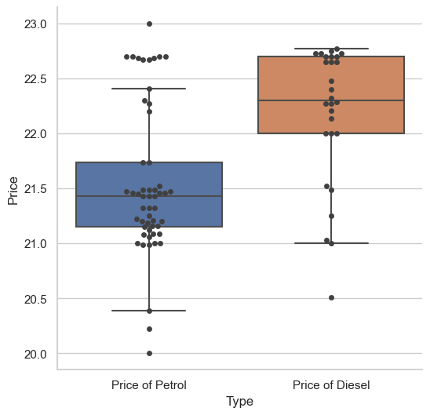

Premise crowdsourced surveys#
Premise crowdsourced surveys are a way of validating, verifying the ground truth and understanding the needs of people on ground, especially in regions impacted by a crisis
community_needs = pd.read_csv('../../data/premise/Community_Needs.csv')
displacement = pd.read_csv('../../data/premise/Displacement.csv')
recent_earthquake = pd.read_csv('../../data/premise/Recent_Earthquake_in_Turkey.csv')
fuel_prices = pd.read_csv('../../data/premise/Premise Turkey Fuel Prices Update.csv')
household_needs = pd.read_csv('../../data/premise/Premise Household Needs TR.csv')
Price of a litre of petrol#
The survey provides data and evidence in the form of photos to capture the price of one litre of petrol and diesel in the areas where the earthquake impact is the highest
fig, ax = plt.subplots(figsize=(10,6), sharex=True)
turkey_adm2.boundary.plot(ax=ax, edgecolor = '#D3D3D3', linewidth=0.5)
gdf.plot(column=' what_is_the_price_of_a_liter_of_diesel', ax=ax, legend = True)
#gdf.sjoin(turkey_adm2).plot(column=' what_is_the_price_of_a_liter_of_petrol', ax=ax, legend = True)
<Axes: >
Price of a litre of diesel#
Show code cell source
fig, ax = plt.subplots(figsize=(10,6))
turkey_adm2.boundary.plot(ax=ax, color = '#d3d3d3')
turkey_adm2.sjoin(gdf).plot(column='Price of Diesel', ax=ax, legend = True)
ax.spines['top'].set_visible(False)
ax.spines['bottom'].set_visible(False)
ax.spines['right'].set_visible(False)
ax.spines['left'].set_visible(False)
ax.set_xticks([])
ax.set_yticks([])
plt.grid(False)

Comparing the price of petrol and diesel#
Show code cell source
import seaborn as sns
fig, ax = plt.subplots(figsize=(6,6))
#gdf[['Price of Diesel', 'Price of Petrol']].boxplot()
sns.set(style="whitegrid")
ax = sns.boxplot(x="Type", y="Price", data=fuel, showfliers = False)
ax = sns.swarmplot(x="Type", y="Price", data=fuel, color=".25")
ax.spines['top'].set_visible(False)
ax.spines['right'].set_visible(False)
plt.show()

Household Needs Survey from Premise#
## Picking the relevant columns
household_columns = [' is_the_primary_health_care_facility_closest_to_you_currently_functional',' is_the_closest_hospital_to_you_currently_functional','observation_lat', 'observation_lon',
' is_the_university_reference_hospital_near_you_functional',' do_you_have_access_to_functioning_food_markets',' in_the_past_six_months_has_the_amount_of_food_in_your_household_decreased_due_to_a_shortage']
Exploring the results in the admin region of Sahinbey#
Show code cell source
fig, ax = plt.subplots(figsize=(10,6))
turkey_adm2[turkey_adm2['adm2_en']=='SAHINBEY'].boundary.plot(ax=ax, edgecolor = '#D3D3D3', linewidth=0.5)
#gdf.sjoin(turkey_adm2[turkey_adm2['adm2_en']=='SAHINBEY']).plot(ax=ax, column=' is_the_primary_health_care_facility_closest_to_you_currently_functional', legend=True)
gdf.sjoin(turkey_adm2[turkey_adm2['adm2_en']=='SAHINBEY']).plot(ax=ax, column=' is_the_closest_hospital_to_you_currently_functional', legend=True)
ax.spines['top'].set_visible(False)
ax.spines['bottom'].set_visible(False)
ax.spines['right'].set_visible(False)
ax.spines['left'].set_visible(False)
ax.set_xticks([])
ax.set_yticks([])
plt.grid(False)

Analysing Community needs, Displacement and Recent earthquake needs surveys#
columns_of_interest_community = [ 'in_your_neighborhood_is_lack_of_income_money_or_resources_to_survive_a_severe_problem',
'in_your_neighborhood_is_lack_of_access_to_safe_drinking_or_cooking_water_a_severe_problem',
'in_your_neighborhood_is_lack_of_access_to_functional_hygienic_bathrooms_a_severe_problem',
'in_your_neighborhood_is_lack_of_access_to_personal_hygiene_products_and_services_a_severe_problem',
'in_your_neighborhood_is_there_a_severe_problem_related_to_nutrition', 'what_are_the_principal_concerns_related_to_nutrition_in_your_neighborhood',
'have_there_been_significant_changes_in_the_total_quantity_of_food_available_to_people_in_your_neighborhood',
'in_your_neighborhood_is_lack_of_access_to_medical_attention_a_severe_problem',
'which_of_the_following_health_services_are_easily_accessible_in_your_local_area',
'what_are_the_primary_issues_faced_by_children_in_your_neighborhood_in_relation_to_access_to_education']
columns_displacement = ['are_you_originally_from_the_area_you_are_located_in_now',
'how_likely_are_you_to_return_to_your_place_of_origin_in_the_next_1_month',
'do_you_live_in_a_refugee_or_idp_camp?', 'how_long_have_you_been_displaced_for?',
'to_your_knowledge,_does_your_community_have_a_positive_view_of_the_idps_and_refugees_residing_in_your_area?','in_the_past_week_has_there_been_an_increase_or_decease_in_the_number_of_refugee_or_idps_present_in_your_local_area']
columns_recent_earthquake = ['did_you_observe_any_damage_to_your_home_during_the_recent_earthquake', 'did_you_notice_any_damage_to_key_infrastructure_or_buildings_in_your_community_because_of_the_recent_earthquake',
'was_your_local_school_house_damaged_or_destroyed_in_the_earthquake',
'did_you_observe_any_damage_to_roads_as_a_result_of_the_earthquake', 'are_there_currently_supplies_or_utilities_you_need_that_you_cannot_currently_access_as_a_result_of_the_earthquake',
'what_supplies_or_utilities_do_you_need_that_you_cannot_currently_access_as_a_result_of_the_earthquake']
Visualizing number of observations from each admin region in the community needs dataset#
Show code cell source
from mpl_toolkits.axes_grid1 import make_axes_locatable
fig, ax = plt.subplots(figsize =(12,10))
#gdf.plot(column = 'mean_of_me', ax=ax, alpha =0.4)
gdf.plot(column = 'observation_id', ax=ax, cmap = 'Oranges', alpha = 0.7)
ax.spines['top'].set_visible(False)
ax.spines['bottom'].set_visible(False)
ax.spines['right'].set_visible(False)
ax.spines['left'].set_visible(False)
ax.set_xticks([])
ax.set_yticks([])
sm = plt.cm.ScalarMappable(cmap='Oranges',norm=plt.Normalize(vmin=gdf['observation_id'].min(), vmax=gdf['observation_id'].max()))
divider = make_axes_locatable(ax)
dvider_kwargs = dict(position="left", size="1.5%", pad=0)
fig.colorbar(sm, cax=divider.append_axes(**dvider_kwargs),
#format = matplotlib.ticker.FuncFormatter(lambda x, pos: ''),
#ticks = matplotlib.ticker.FixedLocator([])
)
ax.set_title('Recent Earthquake Observation Counts')
#plt.savefig('../images/recent_earthquake_observations.png')
Text(0.5, 1.0, 'Recent Earthquake Observation Counts')
displacement['idp_color'] = displacement['idp_color'].str.replace('_',' ')
Change in Displcement of IDPs/refugees#
Show code cell source
fig, ax = plt.subplots(figsize=(10,6))
turkey_adm2.boundary.plot(ax=ax, edgecolor = '#D3D3D3', linewidth=0.5)
displacement.plot(column = 'idp_color', ax=ax, legend = True, cmap='Spectral')
ax.set_xticks([])
ax.set_yticks([])
ax.spines['top'].set_visible(False)
ax.spines['bottom'].set_visible(False)
ax.spines['right'].set_visible(False)
ax.spines['left'].set_visible(False)
#ax.legend(loc='upper right')
ax.set_title('Change in Displacement of IDP/Refugees')
plt.show()
#plt.legend()

Food availability#
Show code cell source
fig, ax = plt.subplots(figsize=(10,6))
turkey_adm2.boundary.plot(ax=ax, edgecolor = '#D3D3D3', linewidth=0.5)
food_availability.plot(column = 'food_color', ax=ax, legend = True, cmap='viridis')
ax.set_xticks([])
ax.set_yticks([])
ax.spines['top'].set_visible(False)
ax.spines['bottom'].set_visible(False)
ax.spines['right'].set_visible(False)
ax.spines['left'].set_visible(False)
ax.set_title('Change in Food Availability')
# leg = ax.legend()
# leg.get_frame().set_alpha(0)
Text(0.5, 1.0, 'Change in Food Availability')
Damage to key infrstructure of buildings#
Interestingly, it was reported that there were damaged buildings even outside the earthquake impacted regions
fig, ax = plt.subplots(figsize=(10,6))
turkey_adm2.boundary.plot(ax=ax, edgecolor = '#D3D3D3', linewidth=0.5)
convert_to_gdf(recent_earthquake).plot(column = 'did_you_notice_any_damage_to_key_infrastructure_or_buildings_in_your_community_because_of_the_recent_earthquake', ax=ax, legend = True)
ax.set_xticks([])
ax.set_yticks([])
ax.spines['top'].set_visible(False)
ax.spines['bottom'].set_visible(False)
ax.spines['right'].set_visible(False)
ax.spines['left'].set_visible(False)
ax.set_title('Damage to key infrastructure or buildings')
Text(0.5, 1.0, 'Damage to key infrastructure or buildings')